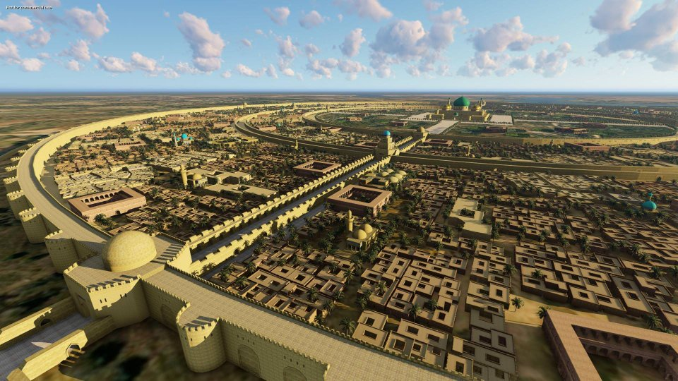
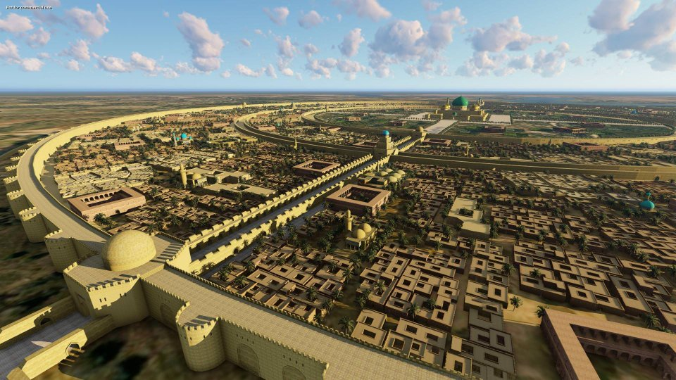

one of the four elemental bending arts, is the geokinetic ability to manipulate earth and rock in all their various forms, prevalent in the Earth Kingdom and the United Republic.
The Earth Kingdom is one of the world's four nations. Spanning an entire continent as well as several subsidiary islands, it is the largest and most populated sovereignty in the world and encompasses much of the eastern hemisphere. The kingdom is ruled by a monarchy which operates under the rule of a king or queen. The last earth monarch was the 54th Earth King, Wu, of the Hou-Ting Dynasty, who desired to abdicate the throne in 174 AG in favor of splitting the nation into independent states with democratically elected leaders, akin to the political system used in the United Republic of Nations.

The Earth Kingdom is characterized by significant ethnic and cultural diversity, a consequence of the country's vast territorial expanse. As a result, it suffers from high levels of local autonomy and ethnic conflict, both of which began accelerating as the central government grew weak. Despite this division, the people's recognition of the Earth Kingdom as a single political entity is largely strengthened through the communal belief in a shared history and identity.